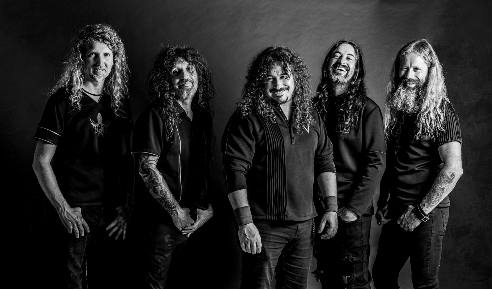

WarCry es una banda de heavy metal fundada en Asturias (España) en 2002, por Víctor García y Alberto Ardines. En sus inicios las letras de WarCry se centraban en una naturaleza épica con tintes fantásticos, teniendo como temas principales la mitología y el mundo medieval. También se caracterizaban por un estilo heavy con baterías más rápidas de lo habitual.
Con el tiempo, las letras de la banda fueron evolucionando hasta tratar experiencias sociales y personales, el estilo musical también se transformó hacia tiempos más rápidos y armonías de parejas de guitarras más rápidos. Tanto la banda como todos sus integrantes han recibido numerosos premios y reconocimientos en España, incluida una certificación de oro.
La banda lanzó su álbum debut en 2002 bajo el título WarCry, el cual recibió una acogida estupenda por parte de la crítica. En diciembre de ese mismo año, lanzan su segundo álbum titulado: El sello de los tiempos, con el cual volvieron a recibir un gran cariño por parte de los críticos de rock. Gracias a este nuevo disco, realizaron su primera gira que duró todo un año y les sirvió para compartir escenario con grandes bandas de la época como Barón Rojo o Sepultura.
Los siguientes años estuvieron llenos de éxitos para WarCry, en 2005 tocaron un concierto en el salón Divino Aqualung de Madrid, al que acudieron más de 2500 aficionados, el éxito de esta presentación fue tal, que meses más tarde sería lanzada como el álbum en vivo titulado: Directo a la Luz. Este disco fue número 1 en ventas de DVDs en España, manteniéndose además en altas posiciones durante varias semanas.
En 2007, la agrupación recibió varios de los reconocimientos más importantes del mundo del rock, tal como el Rockferéndum (votación llevada a cabo por los lectores de las revistas Kerrang! y Heavy Rock) o el MetalZone.
A principios de 2020, WarCry emitió un comunicado en sus redes sociales anunciando un parón indefinido de la banda, donde no descartaban una posible disolución. Su último concierto fue dado el 15 de febrero de ese mismo año en el Escena Rock Madrid Fest, posteriormente, la cuenta oficial de WarCry en Twitter publicaría un “Hasta luego” tristemente recibido por sus seguidores.
Dos años más tarde, en 2022, y para alegría de todos sus fans, la banda anunció su regreso en redes sociales, junto al nuevo álbum: Daimon, publicado el 21 de octubre de 2022.
LA BANDA

DISCOGRAFIA
Acá encontrarás todos los albumes lanzados por Warcry, algunos de estudio y otros en vivo.